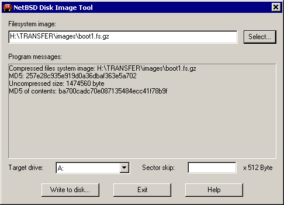

Rawrite32 - NetBSD disk image tool for Win32
You may use this tool for preparing floppy disks or ZIP media to
boot NetBSD from. It takes a file called "a filesystem image" (usually
with a ".fs" suffix) or a compressed variant thereof (usually with ".fs.gz"
suffix) and writes it to a removeable medium. This is similar to formating
a disk with the "transfer system files" option checked.
This program has it's homepage at
http://www.duskware.com/rawrite32,
where you will also find it's full
license terms,
and source code.
A short version of the license is reproduced below.
Details on howto invoke this utility and it's command line options are explained below.
This is a typical screen while working with Rawrite32. Please click on the
parts of the screen you would like documentation on:

System menu
This system menu is anottaded by an
option to invoke the about box, describing the copyright of the program and
giving you the oportunity to visit the homepage of the program (just in
case you forgot that URL).
Select a file
Opens a file browser dialog to select a file system image file. This is
the typical way to enter a filename into the "Filename of image" edit
box.
Write to disk...
Starts the transfer to disk. This button is disabled unless you have selected
a valid drive to trasnfer to (any removable will do) and a valid image to
copy there. It will be disabled on illegal sector offset inputs.
Exit
Quits the program. Same as pressing ESC.
Help
Invokes this help page. Hitting F1 will do this also.
Filename of image
The filename of the image to be written to disk. Rawrite32 accepts filesystem
image files (suffix ".fs") and gzip-compressed filesystem images (suffix
".fs.gz"). The utility doesn't verify the contents of the image (i.e. you
can use this tool to write a word document on your boot disk if you like),
but it displays the MD5 checksum of the file (and additionaly of the decompressed
contents, if the file is compressed). These values are displayed in the output
area and copie to the clipboard. These values are published with every release
or snapshot of NetBSD boot media, so you can compare them and verify you got
the original image.
Program messages
The program outputs messages describing state/progress here. You can not enter
anything there, it is like a TV: just watch the show.
Target drive
Select the removable media to write the image to. This combobox lists all
drives marked as "removable" by the system. Rawrite32 does not support writing
to hard disk.
Sector skip
Normally left blank, use following exact instructions only!
Some install media preparation process may involve copying multiple images to
a media or leaving the first part of the media alone for other reasons (e.g.
because it contains a partition table). This can be acomplished by entering the
number of (512 Byte sized) sectors here.
Invocation and Command Line Options
Normally you invoke this program by double clicking on the EXE file in the
windows explorer or on a link to it. You then use the "Select" button to
open a browser dialog and select the file you would like to write to disk.
You can also select the file in the windows explorer and drag&drop it
onto the program.
Another option is to invoke the program from the command line, passing the
file to write as it's parameter.
In any case, if there is only one removeable disk drive in the system (typically
the floppy drive) the programm will imediately try to write the image file
there - after prompting you, of course.
License
Copyright © 2000 Martin Husemann <martin@duskware.de>.
All rights reserved.
Useage of this program is free. Use it at your own risk. See the full license for
details.
If you would like to redistribute this program in any form, please see the
full license
for details.